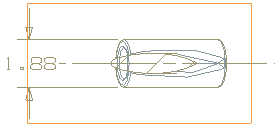
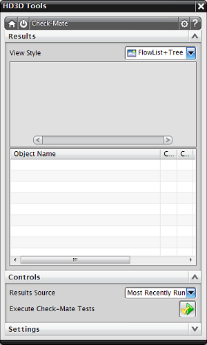

查看并解决制图测试结果
-
调整视图大小以方便观看。

-
在树列表中展开检查最新制图节点。
-
右击 SX@14:R 并选择选择关联对象。
在图纸页的左下角，已选中剖视图的视图边界(在图形窗口中，选定的边界为黄色，在此处显示为红色以便更好地辨别)。

虽然有很多错误已经使用 HD3D 标签进行标记，但是非几何体错误在图形窗口中没有标签。
剖视图的对象名称通常都以 SX 开头。
-
右击选定的视图边界并选择更新。
视图边界将被更新，但是树列表中仍然显示您上一次运行的测试的错误结果，这些结果将被保留直至您再次运行测试。
-
在 Check-Mate HD3D 工具中，点击执行 Check-Mate 测试
 。
。由于不再有错误，并且运行通过的测试已被滤出，因此结果列表为空。

-
关闭所有部件。